cccg
A card game designed to be played asynchronously between many players.
The game revolves around the creation and exchange of cards.
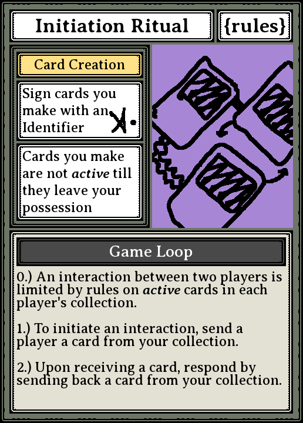
Rules
block of rules, explanation
Design Intent
The design of this game was after the fact influenced by 1000 Blank White Cards
Here is a selection of cards made before the first playtest. This version was played digitally and mostly synchronously in one play session using a network share directory in which players exchanged cards. This set of cards played on the movement and positioning of cards within players' Active and Inactive collections.
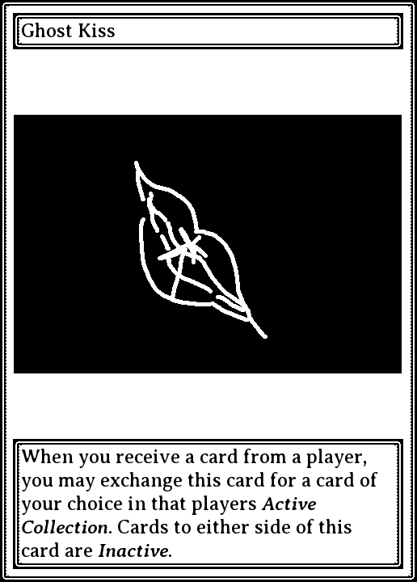
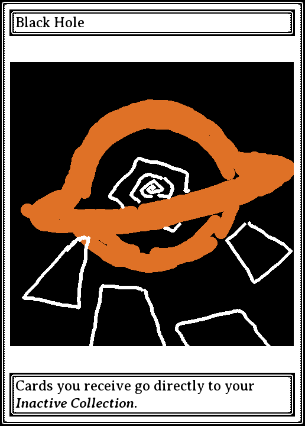
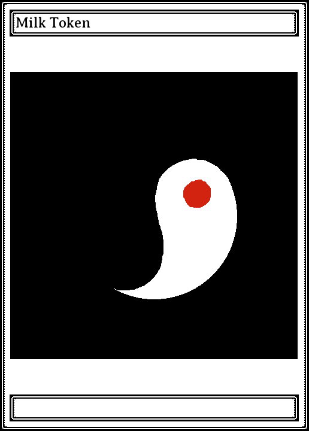
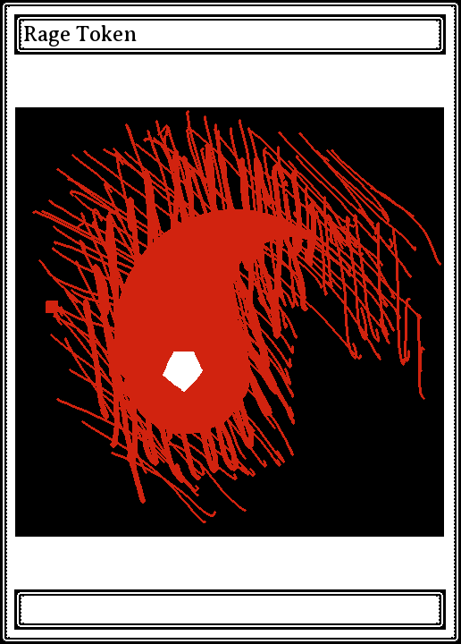
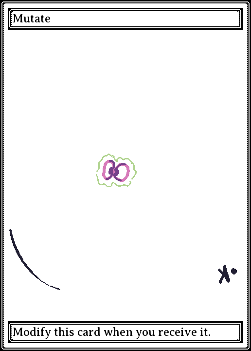
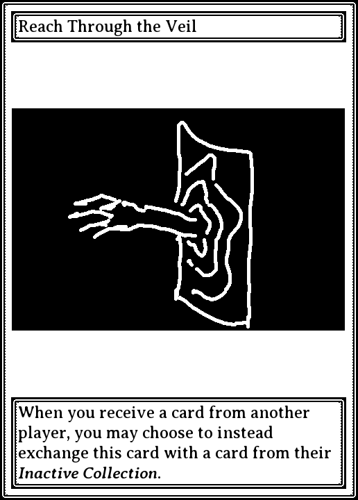
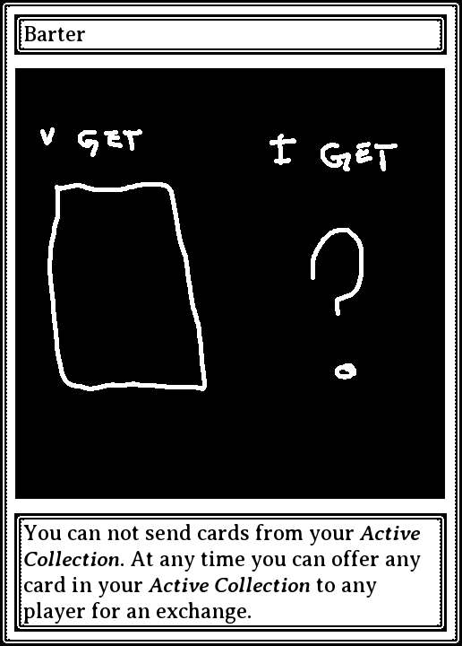
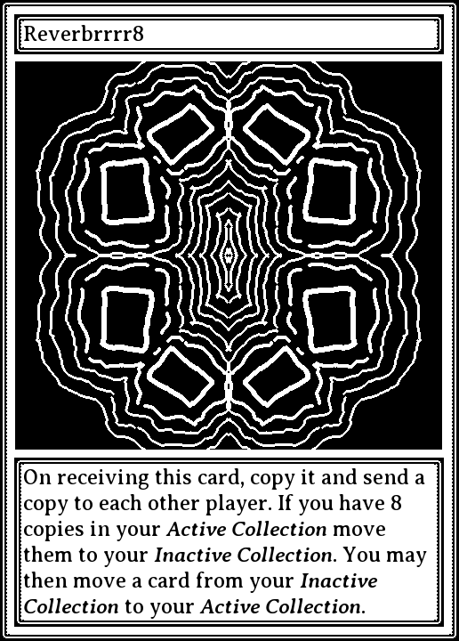
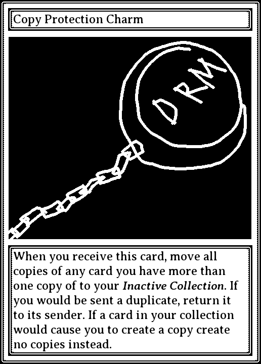
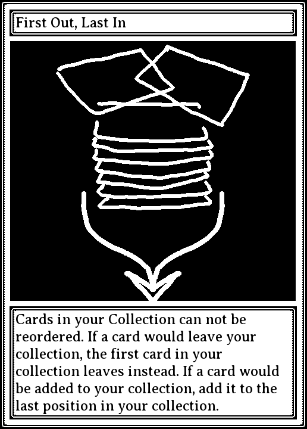